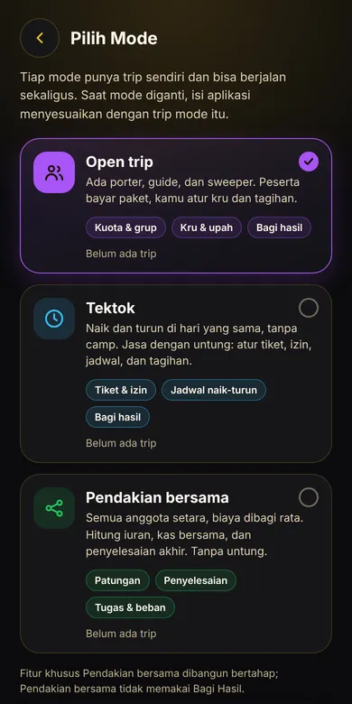
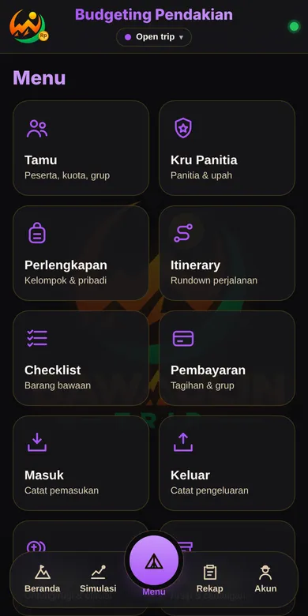
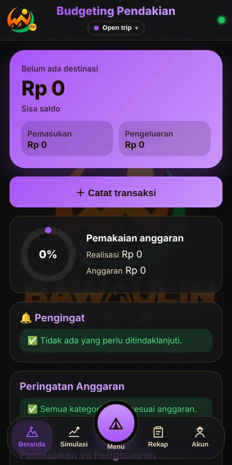

Open trip
Kamu jual paket, peserta bayar, kamu atur kru.
- Kuota peserta dan daftar tunggu otomatis
- Kru panitia dan upah porter, guide, sweeper
- Batal dan hitungan pengembalian dana
- Bagi hasil dan penyelesaian untung rugi
Aplikasi budgeting untuk penyelenggara open trip, tektok, dan pendakian bersama. Peserta, uang masuk dan keluar, bagi hasil, sampai kwitansi PDF, semuanya di HP dan jalan tanpa sinyal.
Untuk HP Android. Setelah terunduh, buka file-nya dan izinkan pemasangan dari browser bila diminta. Chrome atau Play Protect bisa menampilkan peringatan karena aplikasi ini di luar Play Store; pilih tetap unduh atau pasang. Pakai iPhone? Buka versi web. Basecamp gratis selamanya; data tripmu tidak hilang saat naik paket.



Pilih mode sesuai trip yang kamu jalankan. Tiap mode punya buku keuangan sendiri, jadi angka tidak tercampur.
Kamu jual paket, peserta bayar, kamu atur kru.
Naik dan turun di hari yang sama, tanpa camp.
Semua anggota setara, biaya dibagi rata, tanpa untung.
Uang peserta, chat WhatsApp, dan Excel tidak lagi tercecer. Semuanya dicatat di satu tempat, dari open trip sungguhan.
Daftar tamu, status diterima atau menunggu, DP dan pelunasan, kwitansi bernomor, dan tagih lewat WhatsApp satu per satu.
Catat pemasukan dan pengeluaran per kategori, dengan bukti nota. Aplikasi memperingatkan saat pemakaian mendekati anggaran.
Coba beberapa skenario biaya, lihat titik impas, lalu terapkan ke anggaran. Bandingkan dengan kenyataan setelah trip.
Rundown perjalanan, barang kelompok dan pribadi, sewa alat, dan checklist yang bisa dicentang di gunung.
Rekap trip dan kwitansi siap kirim. Di paket Sabana ke atas, PDF memakai logo, kop, dan stempelmu sendiri.
Semua fitur utama bekerja offline. Aplikasi hanya perlu online sesekali untuk memeriksa status paket.
Data trip, peserta, dan uang disimpan di HP. Cadangkan ke Drive atau WhatsApp, dan kunci dengan PIN, pola, atau sidik jari.
Setelah trip selesai, transaksi uang dikunci dan semua perubahan tercatat, jadi angka akhir tidak bisa bergeser diam-diam.
Unduh di HP Android, buka file-nya, lalu pasang. Basecamp langsung bisa dipakai tanpa bayar.
Butuh lebih banyak? Pilih Sabana, Puncak, atau Edelweis.
Salin kode dari aplikasi, tempel di halaman beli, lalu bayar lewat Midtrans.
Setelah pembayaran terverifikasi, paket aktif otomatis di HP-mu. Tanpa kunci yang perlu ditempel.
Mulai dari Basecamp yang gratis. Tiap paket membawa semua isi paket di bawahnya.
Untuk menyelesaikan satu trip dengan puas, tanpa bayar dan tanpa batas waktu.
Untuk penyelenggara aktif yang butuh skala dan hasil yang rapi di depan peserta.
Untuk tim yang menjalankan banyak trip dan perlu kerja bareng.
Puncak tanpa tanggal berakhir, bayar sekali, selama layanan beroperasi.
Pembayaran lewat Midtrans (QRIS, e-wallet, transfer, dan lainnya sesuai yang tersedia). Paket aktif otomatis di HP-mu setelah pembayaran terverifikasi; perpanjangan dilakukan manual dengan membeli lagi, dan setelah berakhir ada masa tenggang 14 hari. Kamu perlu kode perangkat dari aplikasi. Fitur bertanda Segera masih dikerjakan dan belum bisa dipakai. Data lama selalu bisa dibaca dan diekspor di semua paket. Pembelian tunduk pada Syarat & Ketentuan dan kebijakan refund.
| Fitur | Basecamp | Sabana | Puncak | Edelweis |
|---|---|---|---|---|
| Trip dan mode | ||||
| Trip aktif sekaligus | 1 | 3 | 3 | 3 |
| Tiga mode (Open trip, Tektok, Pendakian bersama) | Ya | Ya | Ya | Ya |
| Tamu, itinerary, perlengkapan, checklist | Ya | Ya | Ya | Ya |
| Uang | ||||
| Masuk, keluar, pembayaran, kwitansi, tagih WA, talangan | Ya | Ya | Ya | Ya |
| Hitung Iuran, Kas bersama, penyelesaian (Pendakian bersama) | Ya | Ya | Ya | Ya |
| Bagi Hasil dan penyelesaian official | Tidak | Ya | Ya | Ya |
| Rekap antar-trip dan impor rekap | Tidak | Ya | Ya | Ya |
| Perencanaan | ||||
| Simulasi | 1 skenario | Tanpa batas | Tanpa batas | Tanpa batas |
| Simulasi vs Kenyataan | Tidak | Ya | Ya | Ya |
| Rekap Simulasi lintas mode | Tidak | Tidak | Ya | Ya |
| Pendaftaran online dan salin template | Tidak | Ya | Ya | Ya |
| Laporan | ||||
| PDF dan kwitansi | Pita bawaulin.cash | Logo, kop, stempel sendiri | Logo, kop, stempel sendiri | Logo, kop, stempel sendiri |
| Keamanan dan data | ||||
| Cadangan, PIN, pola, sidik jari | Ya | Ya | Ya | Ya |
| Data lama bisa dibaca dan diekspor | Ya | Ya | Ya | Ya |
| Kolaborasi (sedang dikerjakan) | ||||
| Sinkronisasi antar-HP | Tidak | 1 trip, 3 HP | 3 trip, 6 HP per trip | 3 trip, 8 HP per trip |
| Izin per anggota, riwayat perubahan, catatan konflik | Tidak | Tidak | Ya | Ya |
| Dukungan | ||||
| Bantuan | Standar | Standar | Prioritas | Jalur prioritas |
| Akses awal fitur baru | Tidak | Tidak | Tidak | Ya |
| Pindah HP | 2x per tahun | 2x per tahun | 2x per tahun | Lebih longgar |
Basecamp gratis tanpa batas waktu: satu trip aktif di tiga mode dengan semua fitur dasar. Trip baru boleh dibuat setelah trip sebelumnya ditutup, jumlahnya tidak dibatasi.
Paket melekat pada kode perangkat, jadi HP baru perlu dipindahkan paketnya. Hubungi kami lewat WhatsApp dengan kode perangkat HP lama dan HP baru plus bukti pembelian. Pemindahan gratis, maksimal 2 kali per tahun, dan lebih longgar untuk Edelweis. HP hilang atau rusak kami bantu. Data trip tidak ikut pindah sendiri, jadi cadangkan dulu di HP lama lalu pulihkan di HP baru.
Ini produk digital, jadi pembayaran yang sudah diterima tidak dikembalikan, kecuali paket gagal diaktifkan karena kesalahan di pihak kami. Tidak berlaku untuk salah ketik kode, HP tidak cocok, atau berubah pikiran. Rincian dan cara mengajukan ada di Kebijakan refund.
Penyelenggara open trip pendakian yang bikin aplikasi ini karena capek ngitung manual. Lieur gawe, bawa ulin.